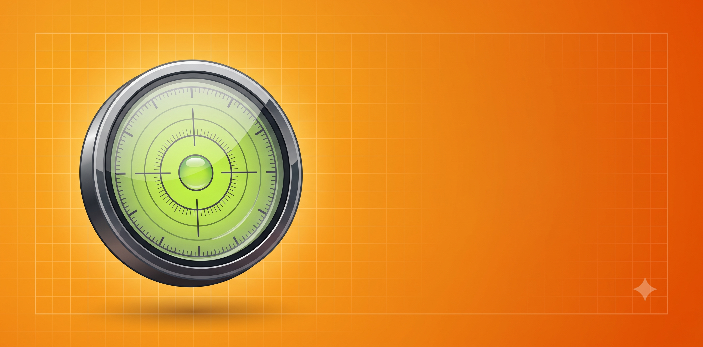

Biến điện thoại thành thước thủy (li-vô) bỏ túi: treo tranh, kê tủ, đóng kệ thẳng tắp mà không cần dụng cụ chuyên dụng.
Thước Thủy biến điện thoại thành li-vô chính xác nhờ cảm biến gia tốc: mặt thủy chuẩn tròn (bọt nước 2D) khi đặt máy nằm, ống thủy 1D khi áp máy theo cạnh. Hiển thị góc nghiêng đến 0.1°, tự rung nhẹ khi đạt cân bằng, cân chỉnh theo mặt phẳng chuẩn để triệt sai số máy, giữ màn hình luôn sáng khi thao tác. Hoạt động offline hoàn toàn, không cần bất kỳ quyền nhạy cảm nào.
Cập nhật lần cuối: 09/07/2026 · Áp dụng cho ứng dụng Thước Thủy - Đo Góc Nghiêng (package home.free.bubblelevel).
| Quyền Android | Mục đích sử dụng |
|---|---|
| INTERNET | Hiển thị quảng cáo Google AdMob. Ứng dụng không dùng internet cho bất kỳ mục đích nào khác. |
| WAKE_LOCK | Giữ thiết bị thức trong lúc phát âm thanh / đo đạc / bật đèn để tác vụ không bị gián đoạn. |
Ứng dụng tích hợp duy nhất một SDK có kết nối mạng: Google AdMob (Google Mobile Ads SDK) để hiển thị quảng cáo — nguồn thu duy trì ứng dụng miễn phí. AdMob có thể thu thập: mã quảng cáo của thiết bị (Advertising ID), địa chỉ IP, thông tin thiết bị chung và dữ liệu tương tác quảng cáo, theo Chính sách quyền riêng tư của Google và cách Google sử dụng dữ liệu khi bạn dùng ứng dụng của đối tác. Bạn có thể đặt lại hoặc xóa Advertising ID trong Cài đặt Android → Google → Quảng cáo. Ngoài AdMob, ứng dụng không nhúng bất kỳ SDK phân tích, theo dõi hay mạng xã hội nào (không Firebase Analytics, không Facebook SDK, không crash reporting).
Vì chúng tôi không lưu bất kỳ dữ liệu nào trên máy chủ nên không tồn tại dữ liệu phía chúng tôi để yêu cầu xóa. Với dữ liệu do Google AdMob xử lý, xem trang Trung tâm quảng cáo của Google.
Ứng dụng không hướng đến trẻ em dưới 13 tuổi và không cố ý thu thập dữ liệu từ trẻ em.
Khi chính sách thay đổi, chúng tôi cập nhật trang này và ngày "Cập nhật lần cuối" ở trên.
Mọi câu hỏi về quyền riêng tư: minhthang0792@gmail.com
Turn your phone into a pocket spirit level: hang frames, align shelves and level furniture without special tools.
Bubble Level uses the accelerometer to act as a precise spirit level: a circular 2D bullseye when the phone lies flat, and a 1D tube when held against an edge. It shows the tilt angle to 0.1°, vibrates gently when perfectly level, supports calibration on a reference surface, and keeps the screen on while you work. Fully offline and needs no sensitive permissions.
Last updated: 09/07/2026 · Applies to Bubble Level - Spirit Level (package home.free.bubblelevel).
| Android permission | Purpose |
|---|---|
| INTERNET | Serve Google AdMob ads. The app uses the internet for no other purpose. |
| WAKE_LOCK | Keep the device awake while playing audio / measuring / lighting so the task is not interrupted. |
The app embeds exactly one network-connected SDK: Google AdMob (Google Mobile Ads SDK), which serves the ads that keep this app free. AdMob may collect the device Advertising ID, IP address, general device information and ad-interaction data, as described in the Google Privacy Policy and how Google uses data from partner apps. You can reset or delete your Advertising ID in Android Settings → Google → Ads. Beyond AdMob, the app embeds no analytics, tracking or social SDKs (no Firebase Analytics, no Facebook SDK, no crash reporting).
Since we store nothing on servers, there is no server-side data to request deletion of. For data processed by Google AdMob, visit Google My Ad Center.
This app is not directed at children under 13 and does not knowingly collect data from children.
When this policy changes, we update this page and the "Last updated" date above.
Privacy questions: minhthang0792@gmail.com